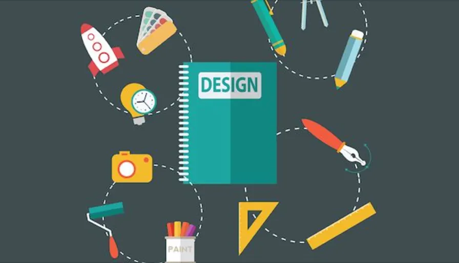

Proceso de Diseño
Ideas Principales.
- el usuario se caracteriza por asuir que todo el proceso de diseño y desarrollo del sitio web debe estar conducido por el usuario, sus necesidades, caracteristicas y objetivos.
- Centrar el diseño en sus usuario (en lugar de centrarlo en las posibilidades Tecnologicas o en nosotros mismos como diseñadores)
Apuntes de Clase.
Implicaciones del diseño
- Involucrar desde el comienzo a los usuarios en el proceso de desarrollo del sitio, conocer como son, que necesitan, pàra que usan el sitio.
- Probar el sitio con los propios usuarios; investigar como reaccionan ante el diseño, como es su experiencia de uso
- Innovar siempre con el objetivo claro de mejorar la expericencia del usuario.
- El proceso de Diseño Web centrado en el usuario se divide en varias fases o etapas, algunas de las cuales tienen caracter iterativo.
- Las fases de "Diseño", "Prototipado" y "Evaluacion" son ciclicas e iterativas.
- En esta etapa se identifican los objetivos del sitio, asi como las necesidades, requerimientos y objetivos de la audiencia potencial.
- Se trata de establecer un equilibrio entre lo que puede ofertar el proveedor y lo que necesita el usuario.
- El sitio web- sus contenidos y diseño - debe servir de medio para lograr los objetviso por parte de proveedor y usuario.
- El diseñador debe obtener informacion precisa tanto de las necesidades y objetivos del proveedor como dle usuario.
- En el primer caso, mediante entrevistas y reniones con los responsables del sitio, sera relativamente facil obtener dicha informacion.
- En el segundo caso, se obtiene informacion del usuario: Que necesita, cuales son susu objetivos, como se comporta y actua, cual sera el contexto de uso y omo afectara a la interaccion, eperiencia y conocimientos previos, etc...
- La respiesta a estas preguntas se resuelve estudiando a la audiencia a traves de metodos de invetigacion. Estos engloban metodos de aproximacion contexual, estudios de campo o etnograficos, metodos de aproximacion por grupos y metodos de aproximacion individual.
- Cuanto mas conozcamos a la audiencia, mas adaptado sera el diseño y mas satisfactoria la experiencia del ususairo final.
- La etapa de planificacion se basa casi completamente en recoger, analizar y ordenar toda la inforamcion posible, con el objetivo de tener una vase solida sobre la que poder tomar decisiones de diseño en las siguiente etapas del proceso.
